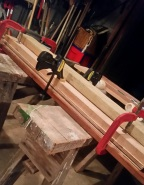
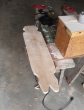
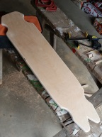
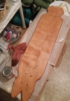
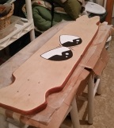

Design Process
The first step in the process is selecting the wood.
If you are going to paint, the wood type is less important.
We've made boards out of various wood and laminates. You need to make sure you choose a wood that will stand up to what you plan to do with the board. Pine is weak and is not a good wood to choose for a board.
If you chose a laminate, pressing the board is the next step.

Four boards are cut in the same size.
Tightbond II glue is spread on the back of one board, front of another. Then we press those two boards together.
Next we spread glue on the top of the two stacked boards and the back of another board. Press these boards together, making a stack of three.
Finally, put glue on the top of the stack of 3 and on the back of the last board. Stack that board on top of the stack of three.
Next, you have to clamp the boards together. We have placed a board under the stack, and another board on top of the stack. Then we clamp these outside boards, which ensures we do not make marks on the board we are pressing.
Cut out the board and sand it down

We usually make a template out of cardboard. Any cardboard will do - even a taped up shape cut from the box your favorite beverage came in.
Draw an outline on the board using the template so you know where to make the cuts.
Using a jigsaw or band saw, cut out the shape that you want, being careful not to chip the wood (especially if you are using laminate).
You can use a power sander or hand sand your board. We use various methods depending on which area is being sanded. A hand held power sander works well for the top and bottom of the board.
We have a box sander (shown in the image) that has a canister on top that holds the sand paper. It spins and we sand the edges with this.
Clean your board

It is very important to make sure the board is clean before you start any of the painting, staining, fiber glassing, etc. that will be the finishing touch on your board.
Wipe it down with a damp cloth, ensuring that you remove all fingerprints, sawdust or other residue from the board.
If you are going to stain the board, the oils from your fingers can cause the stain to react differently in those areas, causing lighter or darker areas on the board.
Sawdust or other particles can cause imperfections in the finish (bumps, bubbles, etc.).
Paint / Stain

Next, you can paint or stain on the board (or paint and stain). Or you can skip this altogether and go with the naked wood before you put the finish coat on the board.
People usually want something personalizing the board, some kind of image or phrase painted on the bottom or placed on the top, in a location that won't be obscured by the grip tape.
With the board in the image, they wanted the SUBLEMON! Logo on the bottom and the top and sides stained.
Finish the board
You can finish the board with glossy or semi-gloss polyurethane, or you can have the bottom of the board strengthened with fiberglass and then a clear coat put over the entire thing.
If you will have artwork on the side with the fiberglass, add the artwork to the wood (before you fiberglass). Add the fiberglass and let it cure. Then you need to wet sand it with a very fine grit sand paper or sanding block. This will give the fiberglass a hazy look to it.
Clean off any residue from the sanding and add the clear coat over the fiberglass. It will clear right up and your artwork will show through.